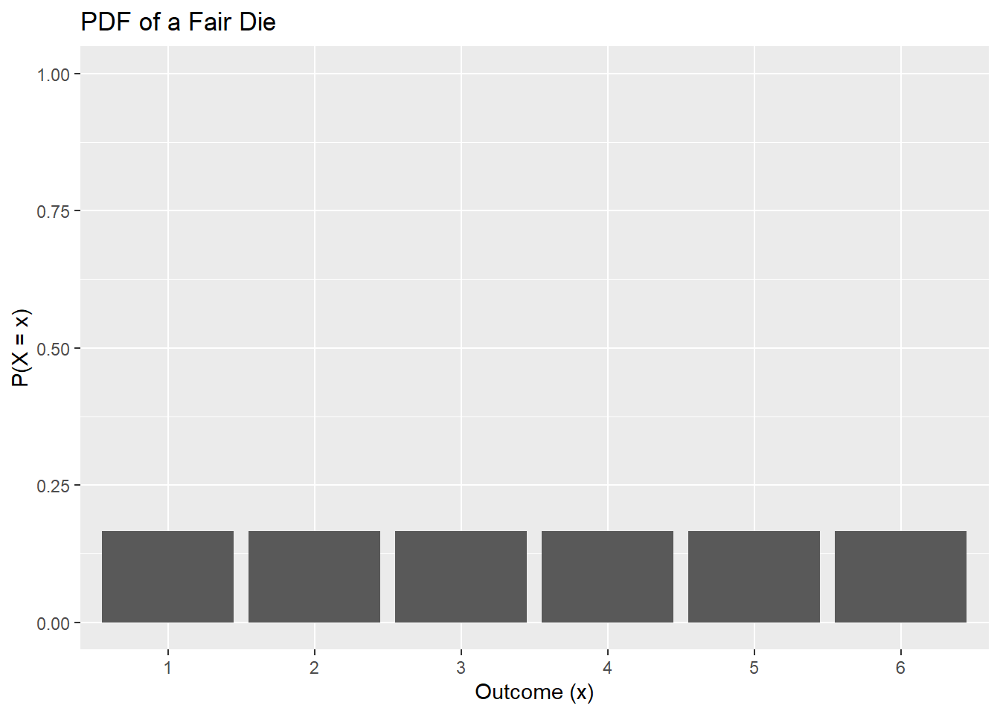
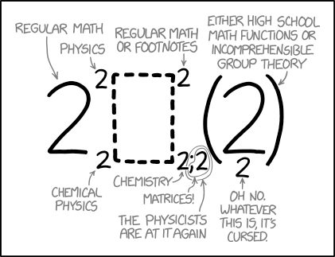
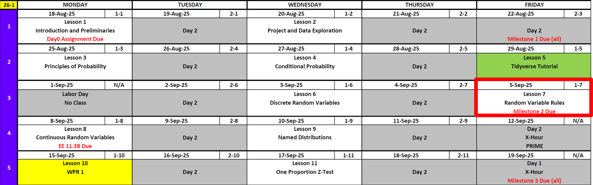
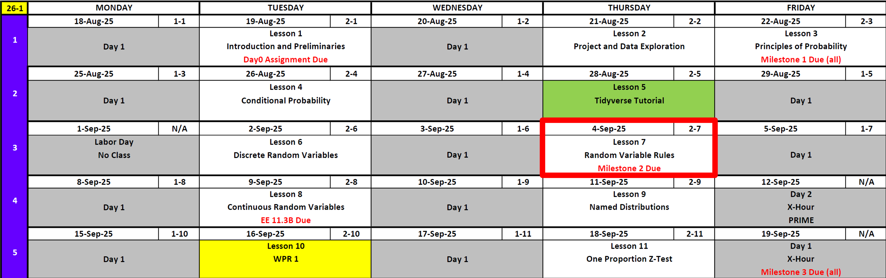
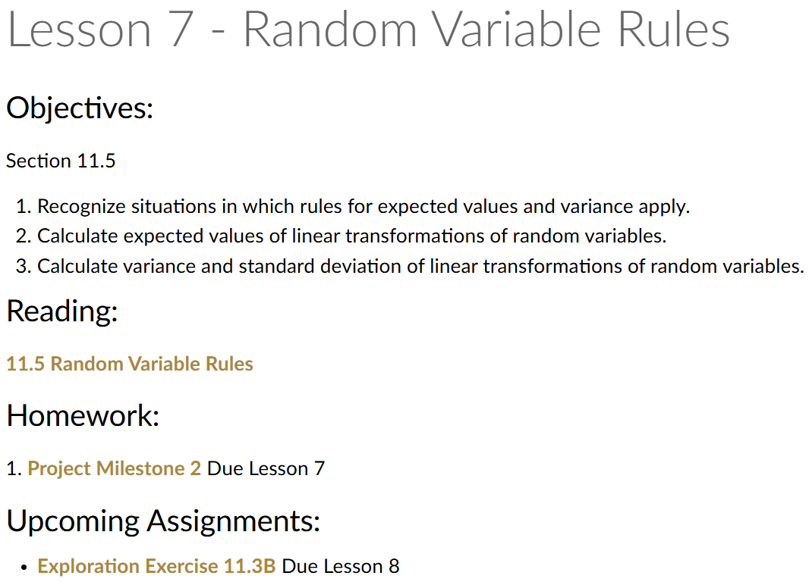
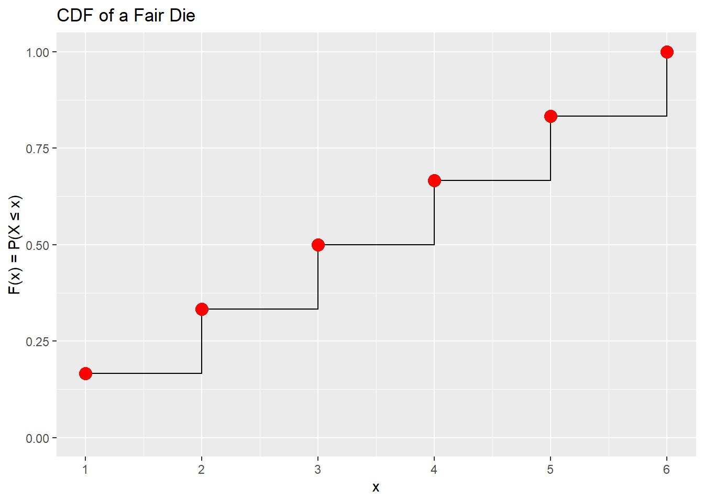

Lesson 7: Random Variable Rules
 Notation is hard
Calendar
Day 1

Day 2


Cal and Reese
Review
Probability Distribution Function (PDF)
Let \(X\in\{1,2,3,4,5,6\}\) be the points shown on one fair die roll.
| \(x\) | 1 | 2 | 3 | 4 | 5 | 6 |
|---|---|---|---|---|---|---|
| \(P(X=x)\) | \(1/6\) | \(1/6\) | \(1/6\) | \(1/6\) | \(1/6\) | \(1/6\) |
\[ P(X=x) = \begin{cases} \dfrac{1}{6}, & x=1, \\[6pt] \dfrac{1}{6}, & x=2, \\[6pt] \dfrac{1}{6}, & x=3, \\[6pt] \dfrac{1}{6}, & x=4, \\[6pt] \dfrac{1}{6}, & x=5, \\[6pt] \dfrac{1}{6}, & x=6, \\[6pt] 0, & \text{otherwise}. \end{cases} \]
Calculate the expected value of a discrete random variable
\[ \mu_X = E[X] = \sum_x x \cdot P(X=x). \]
\[ E[X] = 1\cdot\tfrac16 + 2\cdot\tfrac16 + 3\cdot\tfrac16 + 4\cdot\tfrac16 + 5\cdot\tfrac16 + 6\cdot\tfrac16 = \tfrac{21}{6} = 3.5. \]
Calculate the variance and standard deviation of a discrete random variable
\[ \mathrm{Var}(X)=\sum_x (x-\mu_X)^2\,P(X=x) \]
\[ \mathrm{Var}(X)=\left(1-3.5\right)^2\cdot\tfrac16 +\left(2-3.5\right)^2\cdot\tfrac16 +\left(3-3.5\right)^2\cdot\tfrac16 +\left(4-3.5\right)^2\cdot\tfrac16 +\left(5-3.5\right)^2\cdot\tfrac16 +\left(6-3.5\right)^2\cdot\tfrac16 =\tfrac{35}{12} \]
\[ \mathrm{SD}(X)=\sqrt{\mathrm{Var}(X)}. \]
\[ \mathrm{SD}(X)=\sqrt{\tfrac{35}{12}}\approx1.7078. \]
From PDF to CDF (Cumulative Distribution Function)
Definition of the Cumulative Distribution Function (CDF):
For a discrete random variable \(X\), the cumulative distribution function (CDF) is defined as
\[ F(x) = P(X \leq x) = \sum_{t \leq x} P(X=t). \]
For the fair die,
Cumulative Distribution Function (CDF)
| \(x\) | 1 | 2 | 3 | 4 | 5 | 6 |
|---|---|---|---|---|---|---|
| \(F(x) = P(X \leq x)\) | \(1/6\) | \(2/6\) | \(3/6\) | \(4/6\) | \(5/6\) | \(6/6\) |
\[ F(x) = \begin{cases} 0, & x < 1, \\[6pt] \dfrac{1}{6}, & 1 \leq x < 2, \\[6pt] \dfrac{2}{6}, & 2 \leq x < 3, \\[6pt] \dfrac{3}{6}, & 3 \leq x < 4, \\[6pt] \dfrac{4}{6}, & 4 \leq x < 5, \\[6pt] \dfrac{5}{6}, & 5 \leq x < 6, \\[6pt] 1, & x \geq 6. \end{cases} \]
Code
die_cdf <- die_pdf %>%
mutate(cdf = cumsum(pmf))
ggplot(die_cdf, aes(x = x, y = cdf)) +
geom_step(direction = "hv") +
# geom_step(direction = "hv", color = "blue") +
geom_point(color = "red", size = 4) +
scale_x_continuous(breaks = 1:6) +
scale_y_continuous(limits = c(0,1)) +
labs(
title = "CDF of a Fair Die",
x = "x",
y = "F(x) = P(X ≤ x)"
)
Practice Questions
- What is \(P(X \leq 2)\, ?\)
Answer
We sum probabilities for \(X=1\) and \(X=2\):
\[ P(X \leq 2) = P(1) + P(2) = \tfrac{1}{6} + \tfrac{1}{6} = \tfrac{2}{6} = \tfrac{1}{3}. \]
- What is \(P\!\big(X < \mu_X + 1\,\mathrm{SD}\big), \quad \mu_X=3.5,\ \mathrm{SD}\approx1.7078 \, ?\)
Answer
Compute the cutoff:
\[ \mu_X + 1\,\mathrm{SD} \approx 3.5 + 1.7078 = 5.2078. \]
So we want \(P(X < 5.2078)\). Since \(X\) is discrete, this means \(X \leq 5\).
\[ P(X \leq 5) = \tfrac{5}{6}. \]
- What is \(P(X > 4)\, ?\)
Answer
Possible outcomes are \(X=5\) or \(X=6\):
\[ P(X > 4) = P(5) + P(6) = \tfrac{1}{6} + \tfrac{1}{6} = \tfrac{2}{6} = \tfrac{1}{3}. \]
Calculate expected values of linear transformations of random variables
Event A: Ball game PDF
Draw one ball uniformly at random from a hat with three balls: - Red earns $3, Blue earns $6, Green earns $12.
Outcomes and probabilities (uniform over three balls):
| Outcome \(x\) | $3 | $6 | $12 |
|---|---|---|---|
| \(P(X_A = x)\) | \(1/3\) | \(1/3\) | \(1/3\) |
Expected value (from the PDF): \[ E[X_A] \;=\; 3\cdot\tfrac13 + 6\cdot\tfrac13 + 12\cdot\tfrac13 = \tfrac{3+6+12}{3} \;=\; 7. \]
Variance (from the PDF): \[ \operatorname{Var}(X_A) = \sum_x (x - E[X_A])^2 P(X_A=x) = \tfrac13(3-7)^2 + \tfrac13(6-7)^2 + \tfrac13(12-7)^2. \]
Compute: \[ (3-7)^2=16,\quad (6-7)^2=1,\quad (12-7)^2=25 \;\;\Rightarrow\;\; \operatorname{Var}(X_A) = \tfrac{16+1+25}{3} = \tfrac{42}{3} = 14. \]
Thus \(\mathrm{SD}(X_A)=\sqrt{14}\approx 3.7417\).
Event B: Coin game PDF
Flip a fair coin:
- Tails earns $0, Heads earns $5. - Heads/Tails with probability \(1/2\) each.
| Outcome \(x\) | $0 | $5 |
|---|---|---|
| \(P(X_B = x)\) | \(1/2\) | \(1/2\) |
Expected value (from the PDF): \[ E[X_B] \;=\; 0\cdot\tfrac12 + 5\cdot\tfrac12 \;=\; 2.5. \]
Variance (from the PDF): \[ \operatorname{Var}(X_B) = \sum_x (x - E[X_B])^2 P(X_B=x) = \tfrac12(0-2.5)^2 + \tfrac12(5-2.5)^2 = \tfrac12(6.25) + \tfrac12(6.25) = 6.25. \]
Thus \(\mathrm{SD}(X_B)=\sqrt{6.25}=2.5\).
Combined Game: Add the Winnings
Now imagine a scenario where one draws a ball and flips a coin and earns the value of the draw and the flip.
New PDF. Each pair \((X_A, X_B)\) has probability \((1/3)(1/2)=1/6\). The possible sums:
- \(3+0=3\)
- \(3+5=8\)
- \(6+0=6\)
- \(6+5=11\)
- \(12+0=12\)
- \(12+5=17\)
So:
| \(y\) | 3 | 6 | 8 | 11 | 12 | 17 |
|---|---|---|---|---|---|---|
| \(P(Y=y)\) | \(1/6\) | \(1/6\) | \(1/6\) | \(1/6\) | \(1/6\) | \(1/6\) |
Expected Value (from the PDF) $$ \[\begin{align*} E[Y] &= \sum_y y \, P(Y=y) \\ &= \tfrac{1}{6}(3+6+8+11+12+17) \\ &= \tfrac{57}{6} \\ &= 9.5. \end{align*}\]
$$
Variance From the PDF \[ \begin{align*} \operatorname{Var}(Y) &= \tfrac{1}{6}\bigl((3-9.5)^2 + (6-9.5)^2 + (8-9.5)^2 + (11-9.5)^2 + (12-9.5)^2 + (17-9.5)^2\bigr) \\ &= \tfrac{1}{6}(42.25 + 12.25 + 2.25 + 2.25 + 6.25 + 56.25) \\ &= \tfrac{121.5}{6} \\ &= 20.25. \end{align*} \]
\[ \mathrm{SD}(Y) = \sqrt{20.25} = 4.5. \]
Expected Value and Variance Rules
Expectation is linear (no conditions on indepenence): \[ E[aX + bY + c] \;=\; a\,E[X] + b\,E[Y] + c \]
Variance (independence required): \[ \operatorname{Var}(aX + bY + c) \;=\; a^2 \operatorname{Var}(X) + b^2 \operatorname{Var}(Y) \]
Standard deviation:
\[ \mathrm{SD}(X) = \sqrt{\operatorname{Var}(X)}. \]
Previous Example: Use linear transformation rules (way easier)
We could grind through the PMF, but this is faster—everything collapses into two lines:
Linearity of expectation (no conditions on independence): \[ E[aX + bY + c] = a\,E[X] + b\,E[Y] + c \]
Variance (Independence Required): \[ \operatorname{Var}(aX + bY + c) = a^2 \operatorname{Var}(X) + b^2 \operatorname{Var}(Y) \quad\text{if } X \perp Y. \] Apply to \(Y=X_A+X_B\) with \(X_A \perp X_B\):
We wanted to know \(E[Y] = E[X_A + X_B]\) and \(\operatorname{Var}(Y) = \operatorname{Var}(X_A + X_B)\)
\[ E[Y]=E[X_A]+E[X_B]=7+2.5=9.5,\qquad \operatorname{Var}(Y)=\operatorname{Var}(X_A)+\operatorname{Var}(X_B)=14+6.25=20.25, \] \[ \mathrm{SD}(Y)=\sqrt{20.25}=4.5. \]
What if it costs $10 to play?
Now suppose the player pays $10 up front before playing the ball game (\(X_A\)) and coin game (\(X_B\)).
The net winnings are \[
W = X_A + X_B - 10.
\]
Using the linear rules from the start:
Expectation: \[ E[W] = E[X_A] + E[X_B] - 10 = 7 + 2.5 - 10 = -0.5. \]
Variance (independence of \(X_A\) and \(X_B\)): \[ \operatorname{Var}(W) = \operatorname{Var}(X_A + X_B - 10) = \operatorname{Var}(X_A) + \operatorname{Var}(X_B) = 14 + 6.25 = 20.25. \]
Standard deviation: \[ \mathrm{SD}(W) = \sqrt{20.25} = 4.5. \]
Spinner Game
Spinner A:
- $2 with probability \(0.5\)
- $5 with probability \(0.3\)
- $10 with probability \(0.2\)
So \(X_A\) is a discrete random variable.
Spinner B:
- $1 with probability \(0.4\)
- $4 with probability \(0.6\)
So \(X_B\) is a discrete random variable.
Step 1. Probability Distribution Functions (PDFs)
Write out the probability distribution for each spinner.
Answer
Spinner A: \[ f_{X_A}(x) = \begin{cases} 0.5, & x = 2 \\ 0.3, & x = 5 \\ 0.2, & x = 10 \\ 0, & \text{otherwise.} \end{cases} \]
Spinner B: \[ f_{X_B}(x) = \begin{cases} 0.4, & x = 1 \\ 0.6, & x = 4 \\ 0, & \text{otherwise.} \end{cases} \]
Step 2. Expected Value and Variance of Each Spinner
Answer
Spinner A: \[ E[X_A] = 2(0.5) + 5(0.3) + 10(0.2) = 4.5 \]
\[ \operatorname{Var}(X_A) = 0.5(2-4.5)^2 + 0.3(5-4.5)^2 + 0.2(10-4.5)^2 = 9.25 \]
Spinner B: \[ E[X_B] = 1(0.4) + 4(0.6) = 2.8 \]
\[ \operatorname{Var}(X_B) = 0.4(1-2.8)^2 + 0.6(4-2.8)^2 = 2.16 \]
Step 3. Combined Prize
In this game show, you play both games concurrently.
Let \(Y = X_A + X_B\), assuming independence.
Answer
\[ E[Y] = E[X_A] + E[X_B] = 4.5 + 2.8 = 7.3 \]
\[ \operatorname{Var}(Y) = \operatorname{Var}(X_A) + \operatorname{Var}(X_B) = 9.25 + 2.16 = 11.41 \]
\[ \mathrm{SD}(Y) = \sqrt{11.41} \approx 3.38 \]
Step 4. Bonus Round
Now suppose in a bonus round the winnings are doubled for Spinner A and tripled for Spinner B:
\[
W = 2X_A + 3X_B.
\]
Answer
Expectation: \[ E[W] = 2E[X_A] + 3E[X_B] = 17.4 \]
Variance: \[ \operatorname{Var}(W) = 2^2 \operatorname{Var}(X_A) + 3^2 \operatorname{Var}(X_B) = 56.44 \]
Standard deviation: \[ \mathrm{SD}(W) = \sqrt{56.44} \approx 7.52 \]
Step 5. Cost to Play
Now suppose it costs $15 to enter the bonus round.
The net winnings are \[
Z = 2X_A + 3X_B - 15.
\]
Answer
Expectation: \[ E[Z] = 2E[X_A] + 3E[X_B] - 15 = 2.4 \]
Variance (Assuming Independence): \[ \operatorname{Var}(Z) = 56.44 \]
Standard deviation: \[ \mathrm{SD}(Z) = \sqrt{56.44} \approx 7.52 \]
Board Problem: Two Bags of Balls
You draw one ball from each bag, independently.
Bag A (5 balls total):
- 2 red balls worth $3 each,
- 2 blue balls worth $7 each,
- 1 gold ball worth $15.
Let \(X_A\) be the payout from Bag A.
Bag B (4 balls total):
- 1 black ball worth $0,
- 1 green ball worth $4,
- 2 purple balls worth $8.
Let \(X_B\) be the payout from Bag B.
- Find \(E[X_A]\) and \(\operatorname{Var}(X_A)\) from the PDF definition.
- Find \(E[X_B]\) and \(\operatorname{Var}(X_B)\) from the PDF definition.
- Compute the expected value of both games played together assuming independence.
- Bonus round with scaling and a fee. In a special round, the payout is multiplied: you get three times the Bag A value but half the Bag B value, then pay a flat fee of $20.
Answer
1) Bag A. Probabilities: \(P(X_A=3)=\tfrac{2}{5}\), \(P(X_A=7)=\tfrac{2}{5}\), \(P(X_A=15)=\tfrac{1}{5}\).
\[ E[X_A] = 3\cdot\tfrac{2}{5} + 7\cdot\tfrac{2}{5} + 15\cdot\tfrac{1}{5} = \tfrac{6+14+15}{5} = 7. \]
\[ \operatorname{Var}(X_A) = 0.4(3-7)^2 + 0.4(7-7)^2 + 0.2(15-7)^2 = 0.4(16) + 0 + 0.2(64) = 6.4 + 12.8 = 19.2. \]
2) Bag B. Probabilities: \(P(X_B=0)=\tfrac{1}{4}\), \(P(X_B=4)=\tfrac{1}{4}\), \(P(X_B=8)=\tfrac{1}{2}\).
\[ E[X_B] = 0\cdot\tfrac{1}{4} + 4\cdot\tfrac{1}{4} + 8\cdot\tfrac{1}{2} = 1 + 4 = 5. \]
\[ \operatorname{Var}(X_B) = 0.25(0-5)^2 + 0.25(4-5)^2 + 0.5(8-5)^2 = 0.25(25) + 0.25(1) + 0.5(9) = 6.25 + 0.25 + 4.5 = 11. \]
3) Both bags together. Let \(Y = X_A + X_B\).
\[ E[Y] = E[X_A] + E[X_B] = 7 + 5 = 12. \]
\[ \operatorname{Var}(Y) = \operatorname{Var}(X_A) + \operatorname{Var}(X_B) = 19.2 + 11 = 30.2. \]
\[ \mathrm{SD}(Y) = \sqrt{30.2} \approx 5.50. \]
4) Bonus round with fee.
\[ Z = 3X_A + \tfrac{1}{2}X_B - 20. \]
Expectation: \[ E[Z] = 3E[X_A] + \tfrac{1}{2}E[X_B] - 20 = 3(7) + 0.5(5) - 20 = 21 + 2.5 - 20 = 3.5. \]
Variance: \[ \operatorname{Var}(Z) = 3^2 \operatorname{Var}(X_A) + \left(\tfrac{1}{2}\right)^2 \operatorname{Var}(X_B) = 9(19.2) + 0.25(11) = 172.8 + 2.75 = 175.55. \]
Standard deviation: \[ \mathrm{SD}(Z) = \sqrt{175.55} \approx 13.25. \]
Before you leave
Today:
- Any questions for me?
Lesson 8
Upcoming Graded Events
- WPR 1: Lesson 10
- Exploration Exercise 11.3B
- Project Milestone 3: Due Canvas Lesson 7